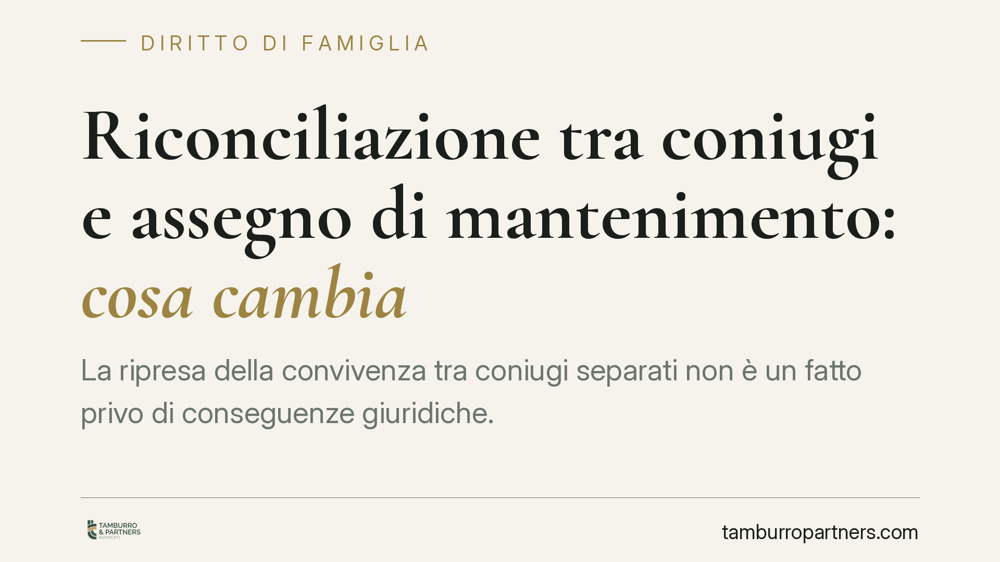

Riconciliazione tra coniugi e assegno di mantenimento: cosa cambia
La ripresa della convivenza tra coniugi separati non è un fatto privo di conseguenze giuridiche. Fa cessare lo stato di separazione e, con esso, l'obbligo di versare l'assegno di mantenimento per il futuro. Resta invece più delicata la sorte degli arretrati già maturati. Una recente pronuncia di merito è tornata sul tema, offrendo spunti utili a chi vive questa situazione.

Il punto di partenza: l'art. 157 del Codice civile
La riconciliazione tra coniugi è disciplinata dall'art. 157 del Codice civile. La norma stabilisce che gli effetti della separazione cessano quando i coniugi, di comune accordo, riprendono la convivenza. Non è richiesta una dichiarazione formale davanti a un giudice: la riconciliazione può risultare anche da un comportamento non equivoco incompatibile con lo stato di separazione.
Si parla, in questi casi, di *comportamenti concludenti*: condotte che, pur in assenza di atti scritti, manifestano in modo chiaro la volontà di ricostituire il consorzio familiare. La ripresa stabile della convivenza, la condivisione dell'abitazione e del progetto di vita sono gli indici tipici valorizzati dalla giurisprudenza.
Effetti sull'assegno di mantenimento
Il mantenimento tra coniugi trova fondamento nello stato di separazione. Venuta meno la separazione per effetto della riconciliazione, viene meno anche il presupposto dell'obbligo. Da quel momento, l'assegno non è più dovuto per il futuro.
Occorre però distinguere due profili, spesso confusi:
- Effetti pro futuro. Dalla ripresa della convivenza cessa l'obbligo di corrispondere l'assegno. Su questo l'orientamento è lineare.
- Arretrati già maturati. Le somme divenute esigibili *prima* della riconciliazione non si estinguono automaticamente per il solo fatto della ripresa della convivenza. In linea di principio restano dovute, salvo che le parti abbiano inteso rinunciarvi. La rinuncia, tuttavia, può anch'essa desumersi da comportamenti concludenti, quando il contesto complessivo della riconciliazione lo giustifichi.
La recente pronuncia di merito richiamata si è mossa su questo crinale, escludendo il diritto del coniuge creditore a recuperare quanto preteso, alla luce della riconciliazione intervenuta e delle condotte delle parti. Si tratta di una decisione che va letta nel suo specifico contesto probatorio, non come regola generale di automatica estinzione degli arretrati.
Il profilo delle spese e la soccombenza virtuale
Un aspetto meno visibile, ma rilevante, riguarda le spese di lite. Quando una domanda viene respinta perché il diritto azionato non sussiste o non è più fondato, opera il principio della soccombenza: la parte che ha agito senza ragione può essere condannata a rifondere le spese dell'altra.
La cosiddetta *soccombenza virtuale* consente al giudice di valutare chi avrebbe avuto torto nel merito anche quando il processo si chiude per ragioni sopravvenute. Chi avvia un'azione di recupero senza considerare gli effetti della riconciliazione si espone quindi a un doppio rischio: il rigetto della domanda e l'aggravio delle spese.
Implicazioni pratiche
Per il coniuge creditore, la ripresa della convivenza può incidere pesantemente sulle pretese economiche. Agire per recuperare l'assegno dopo essersi riconciliati significa misurarsi con un presupposto giuridico ormai venuto meno, almeno per il futuro, e con una posizione tutt'altro che sicura sugli arretrati.
Per il coniuge debitore, la riconciliazione è un argomento difensivo di rilievo. Documentarla correttamente consente di contrastare richieste di pagamento e di resistere in giudizio.
In entrambi i casi, il nodo è probatorio: la riconciliazione va dimostrata con elementi concreti e verificabili, perché la sua esistenza, la sua data e la sua portata determinano gli effetti economici.
Cosa fare in concreto
- Documentare la ripresa della convivenza con elementi oggettivi: cambi di residenza, utenze intestate, corrispondenza, testimonianze, prove della condivisione dell'abitazione.
- Individuare con precisione la data in cui la convivenza è ripresa: è il discrimine tra arretrati maturati prima e obbligo cessato dopo.
- Verificare la sorte degli arretrati già scaduti prima della riconciliazione, valutando se vi siano elementi di rinuncia o se restino esigibili.
- Formalizzare la riconciliazione, quando possibile, con una dichiarazione espressa: è opportuno ridurre così i margini di incertezza probatoria.
- Valutare il rischio spese prima di avviare o resistere a un'azione di recupero, alla luce del principio di soccombenza.
Ogni famiglia ha il suo equilibrio.
Separazione, divorzio, affidamento, assegno: se vuoi un confronto riservato su una specifica situazione, scrivi allo studio. Ti rispondiamo entro un giorno lavorativo.